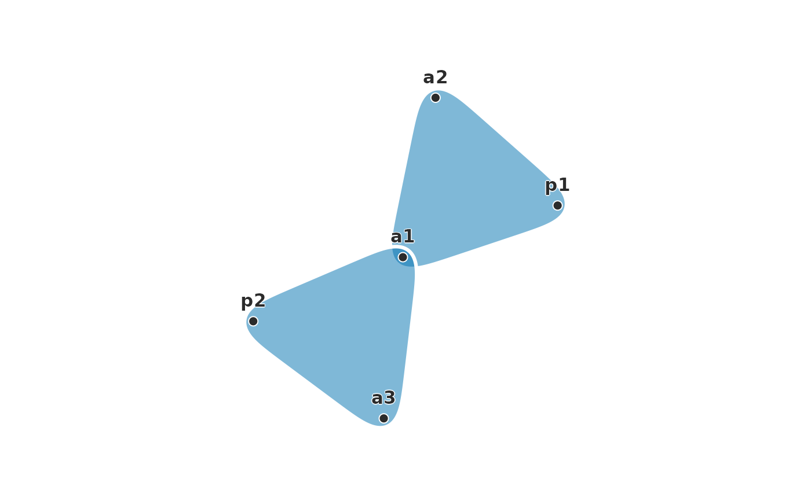
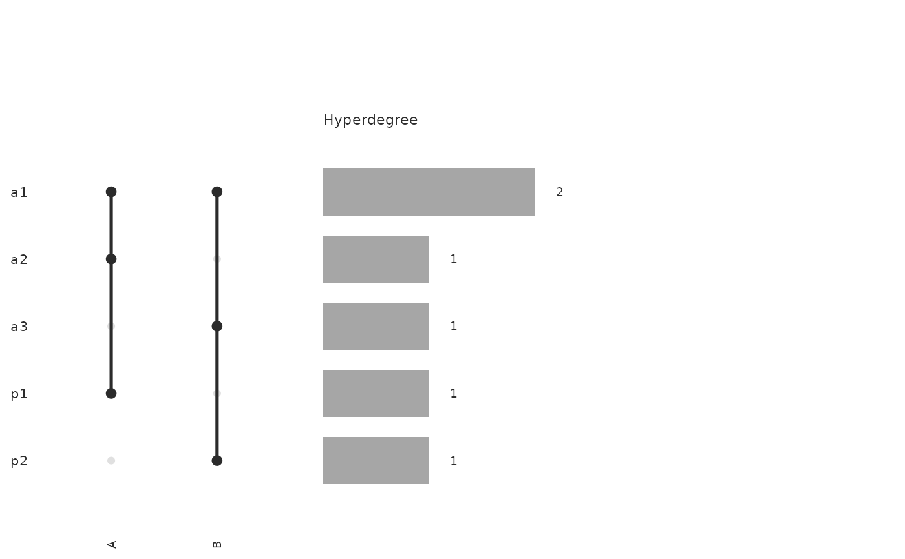

Plots the snapshot that hg_snapshot() takes at at as a hypergraph,
with plot.net_hg(): the hyperedges active then, as hulls by default or
as the incidence matrix with type = "incidence". The snapshot keeps the
hyperedge attributes and the data's names for nodes and hyperedges, so
color_by can name an attribute and the legends use the data's words.
Arguments
- x
- at
Snapshot time; defaults to the end of observation.
- mode
Snapshot mode passed to
hg_snapshot().- method
Deprecated. The snapshot used to be projected to a pairwise network;
plot(pairwise_network(hg_snapshot(x, at), type = method))plots that network.- ...
Arguments passed to
plot.net_hg(), such astype,color_byorlabels.
Value
A ggplot object, as plot.net_hg() returns.
Conditions
hypergraphs_bad_input when the snapshot has no active nodes, and as
plot.net_hg() raises it; hypergraphs_deprecated (a warning) for
method.
Examples
seats <- data.frame(
case = rep(c("A", "B", "C"), each = 3),
arbitrator = c("p1", "a1", "a2", "p2", "a1", "a3", "p1", "a4", "a5"),
constituted = rep(c(1, 2, 4), each = 3),
concluded = rep(c(4, 3, 6), each = 3)
)
thg <- temporal_hypergraph(seats, node = "arbitrator", hyperedge = "case",
start = "constituted", end = "concluded")
plot(thg, at = 2.5)

plot(thg, at = 2.5, type = "incidence", edge_labels = TRUE)
